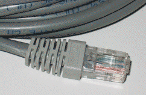

2. Conectarea la rețea și la Internet¶
Note
Pentru a parcurge această secțiune este recomandat să descărcați ultima
versiune a respository-ului laboratorului. Pentru a descărca ultima versiune
a repository-ului rulați comanda git pull în directorul
~/uso-lab/labs/03-user/lab-containers/.
Infrastructura laboratorului este bazată pe containere docker ale căror
imagini vor fi generate pe propriul calculator. Dacă nu veți deja instalat
Docker Engine pe sistem, scriptul
~/uso-lab/labs/03-user/lab-containers/lab_prepare.sh vă va instala aplicația.
După ce ați terminat de lucrat vă recomandăm să opriți containerele rulând
comanda ./lab-prepare.sh delete în directorul
~/uso-lab/labs/03-user/lab-containers/.
În cadrul acestei secțiuni vom învăța cum să reparăm problemele de conectivitate la rețea (sau, informal, rezolvarea problemei “nu-mi merge Internetul”). Pentru a face asta este necesar să parcurgem toate nivelurile de rețea prin care trec datele pentru a fi trimise în Internet. În continuare vom prezenta pașii pe care îi urmăm ca să verificăm funcționalitatea nivelului de rețea și cum putem să îl configurăm sumar.
2.1. Interacţiunea cu nivelul fizic¶
Primul nivel cu care noi interacționăm este nivelul fizic. Nivelul fizic este reprezentat de cablul UTP pentru o rețea cu fir, sau de undele radio ale unei rețele wireless. Acestea sunt mediul prin care informația este transferată.
O altă componentă a nivelului fizic este placa de rețea a sistemului. Aceasta va trimite mesaje prin mediu de transmisie, fie acesta cablu de cupru, fibră sau unde radio.
Majoritatea timpului problemele de conexiune la Internet vin de la faptul că nu este cablul de Internet conectat la placa de rețea, sau de la faptul că avem conexiune slabă la rețeaua wireless.
La nivel fizic, putem verifica conexiunea și funcționalitatea unei plăci de rețea uitându-ne la ledurile care reprezintă conexiunea la mediul fizic. Observăm în GIF-ul de mai jos cum arată ledurile unei plăci de rețea funcționale. Dacă acestea nu sunt aprinse, atunci nu vom avea conectivitate la rețea.

2.1.1. Investigarea nivelului fizic al rețelei¶
Note
În general, în Linux fiecare placă de rețea are asociată câte o interfață de rețea.
La nivelul sistemului de operare putem verifica dacă o placă de rețea este activă folosind comanda următoare:
Note
Pentru rularea acestui demo rulați în directorul
~/uso.git/labs/03-user/lab-containers/ comanda ./lab_prepare.sh install fizic.
Pentru a ne conecta la infrastructura pentru această secțiune vom folosi
comanda ./lab_prepare.sh connect fizic
root@fizic:~# ip link show
1: lo: <LOOPBACK,UP,LOWER_UP> mtu 65536 qdisc noqueue state UNKNOWN mode DEFAULT group default qlen 1000
link/loopback 00:00:00:00:00:00 brd 00:00:00:00:00:00
99: eth0@if100: <BROADCAST,MULTICAST,UP,LOWER_UP> mtu 1500 qdisc noqueue state UP mode DEFAULT group default
link/ether 02:42:0a:0a:0a:01 brd ff:ff:ff:ff:ff:ff link-netnsid 0
113: eth1@if114: <BROADCAST,MULTICAST> mtu 1500 qdisc noqueue state DOWN mode DEFAULT group default
link/ether 02:42:0b:0b:0b:01 brd ff:ff:ff:ff:ff:ff link-netnsid 0
115: eth2@if116: <BROADCAST,MULTICAST> mtu 1500 qdisc noqueue state DOWN mode DEFAULT group default
link/ether 02:42:0c:0c:0c:01 brd ff:ff:ff:ff:ff:ff link-netnsid 0
Starea fiecărei interfețe de rețea este reprezentată pe câte o linie împreună cu
parametrii săi de rulare. Majoritatea informațiilor afișate de comanda de mai
sus nu sunt relevante pentru noi. O opțiune relevantă este valoarea
state, urmată de starea interfeței de rețea, care poate să fie UP,
DOWN sau UNKNOWN.
Note
Formatul pentru numele interfețelor diferă de la o distribuție la alta. În
cadrul infrastructurii de laborator folosim containere de tip Docker în
cadrul cărora numele interfețelor este de forma ethX, unde X este un
număr. În funcție de distribuția pe care rulăm numele interfețelor poate să
se fie într-un format diferit.
Observăm că interfața de rețea cu numele eth0 este pornită, deoarece linia
asociată interfeței conține șirul de caractere state UP. În același timp
observăm că interfața de rețea eth1 nu este activă deoarece pe linia sa
observăm șirul de caractere state DOWN.
Pentru a porni interfața eth1 vom folosi următoarea comandă:
root@uso:~# ip link set up dev eth1
Mereu, după ce rulăm o comandă, trebuie să verificăm că s-a efectuat cu succes,
folosind o metodă de verificare. În cazul de față vom folosi tot comanda ip
link show:
root@fizic:~# ip link show
1: lo: <LOOPBACK,UP,LOWER_UP> mtu 65536 qdisc noqueue state UNKNOWN mode DEFAULT group default qlen 1000
link/loopback 00:00:00:00:00:00 brd 00:00:00:00:00:00
99: eth0@if100: <BROADCAST,MULTICAST,UP,LOWER_UP> mtu 1500 qdisc noqueue state UP mode DEFAULT group default
link/ether 02:42:0a:0a:0a:01 brd ff:ff:ff:ff:ff:ff link-netnsid 0
113: eth1@if114: <BROADCAST,MULTICAST,UP,LOWER_UP> mtu 1500 qdisc noqueue state UP mode DEFAULT group default
link/ether 02:42:0b:0b:0b:01 brd ff:ff:ff:ff:ff:ff link-netnsid 0
115: eth2@if116: <BROADCAST,MULTICAST> mtu 1500 qdisc noqueue state DOWN mode DEFAULT group default
link/ether 02:42:0c:0c:0c:01 brd ff:ff:ff:ff:ff:ff link-netnsid 0
2.1.1.1. Exercițiu - Pornirea unei interfețe¶
Porniți interfața de rețea eth2.
2.2. Configurarea nivelului Internet¶
2.2.1. Identificarea adresei de Internet¶
Note
Pentru rularea acestui demo rulați în directorul
~/uso.git/labs/03-user/lab-containers/ comanda ./lab_prepare.sh install internet.
Pentru a ne conecta la infrastructura pentru această secțiune vom folosi
comanda ./lab_prepare.sh connect internet
Pentru comunicare între două stații din Internet, trebuie ca cele două stații să fie conectate la Internet. Și apoi cele două stații să se poată adresa una alteia. Adică fiecare stație are nevoie de un identificator, o adresă. Cum fiecare casă din lume are o adresă cu care poate fi identificată unic, similar este necesar pentru un calculator.
Pentru identificarea stațiilor folosim o adresă numită adresa IP (Internet Protocol). Fiecare interfață de rețea are nevoie de o adresă IP să fie configurată.
Pentru a vedea adresele IP configurate pe interfețele de rețea folosim următoarea comandă:
root@internet:~# ip address show
1: lo: <LOOPBACK,UP,LOWER_UP> mtu 65536 qdisc noqueue state UNKNOWN group default qlen 1000
link/loopback 00:00:00:00:00:00 brd 00:00:00:00:00:00
inet 127.0.0.1/8 scope host lo
valid_lft forever preferred_lft forever
195: eth0@if196: <BROADCAST,MULTICAST,UP,LOWER_UP> mtu 1500 qdisc noqueue state UP group default
link/ether 02:42:0a:0a:0a:02 brd ff:ff:ff:ff:ff:ff link-netnsid 0
inet 10.10.10.2/24 brd 10.10.10.255 scope global eth0
valid_lft forever preferred_lft forever
199: eth1@if200: <BROADCAST,MULTICAST> mtu 1500 qdisc noqueue state DOWN group default
link/ether 02:42:0b:0b:0b:02 brd ff:ff:ff:ff:ff:ff link-netnsid 0
203: eth2@if204: <BROADCAST,MULTICAST> mtu 1500 qdisc noqueue state DOWN group default
link/ether 02:42:0c:0c:0c:02 brd ff:ff:ff:ff:ff:ff link-netnsid 0
Există două tipuri de adrese IP (IPv4 și IPv6), dar în cadrul acestui laborator
vom lucra numai cu adrese de tip IPv4. Adresele IP ale interfețelor sunt scrise
pe liniile care conțin inet. Adresele IPv4 sunt de forma A.B.C.D, unde
A, B, C și D sunt numere cu valori între 1 si 255.
Pentru detalii despre adresele de tip IPv6 folosiți urmăriți această 2 explicație.
2.2.2. Configurarea unei adrese IP¶
Există două metode pentru configurarea unei adrese IP pe o interfață:
configurare statică, prin care noi configurăm manual adresa IP pe interfața de rețea, implică să cunoaștem din ce rețea face parte interfața pe care vrem să o configurăm și ce adrese IP sunt libere;
configurare dinamică, obținută automat, care nu presupune cunoașterea informațiilor despre rețea, deoarece acestea vor fi primite automat de pe rețea.
Vom insista pe configurarea dinamică, deoarece este mai simplă. În plus, nu avem cum să aflăm informațiile despre rețea înainte de a configura interfața de rețea.
2.2.2.1. Recapitulare - Pornirea interfețelor de rețea¶
Faceți modificările necesare astfel încât interfața eth1 să fie în starea
UP.
2.2.2.2. Configurarea IP-ului în mod dinamic¶
Pentru a obține o adresă IP în mod dinamic pe o interfață
folosim comanda dhclient:
root@internet:~# dhclient eth1
mv: cannot move '/etc/resolv.conf.dhclient-new.35' to '/etc/resolv.conf': Device or resource busy
Observație:
Linia mv: cannot move '/etc/resolv.conf.dhclient-new.35' to
'/etc/resolv.conf': Device or resource busy apare mereu în containerele
docker atunci când încercăm să obținem o adresă IP folosind comanda
dhclient. Nu este o problemă dacă aceasta apare.
Mai sus am rulat comanda pentru a obține o adresă IP pentru interfața eth1.
Comanda dhclient este bazată pe protocolul DHCP (Dynamic Host Configuration
Protocol). Acesta presupune că există un server pe rețea care cunoaște ce IP-uri
sunt folosite pe rețea și care poate să ofere adrese IP calculatoarelor care fac
cereri pe rețea. dhclient face o cerere de rezervare a unei adrese IP către
serverul DHCP de pe rețea.
2.2.2.3. Recapitulare - Afișarea adreselor IP configurate pe interfețele de rețea¶
Afișați adresele IP de pe toate interfețele.
Observați că am obținut o adresă IP pe interfața eth1.
2.2.2.4. Exercițiu - Configurarea dinamică a unei adrese IP¶
Configurați adresa IP pe interfața eth2.
2.2.2.5. Ștergerea unei configurații de rețea de pe o interfață¶
Pentru șterge o adresă IP de pe o interfața folosim comanda ip address flush în felul următor:
root@internet:~# ip address flush eth1
root@internet:~# ip address show eth1
199: eth1@if200: <BROADCAST,MULTICAST,UP,LOWER_UP> mtu 1500 qdisc noqueue state UP group default
link/ether 02:42:0b:0b:0b:02 brd ff:ff:ff:ff:ff:ff link-netnsid 0
Observație:
Putem să afișăm configurația unei singure interfețe de rețea
folosind numele interfeței ca parametru pentru comanda ip address show
2.2.2.6. Exercițiu - Ștergerea configurației de rețea¶
Ștergeți configurația de rețea de pe interfețele eth1 și eth2.
2.2.3. Verificarea conectivității la o altă stație¶
Note
Pentru rularea acestui demo, comenzile vor fi rulate în cadrul mașinii virtuale USO.
Pentru a verifica conexiunea dintre două stații folosim comanda ping. Această
comandă trimite mesaje către o stație și așteaptă un răspuns de la ea.
Atunci când testăm conexiunea la internet, vrem să verificăm câteva aspecte, odată ce am obținut o adresă IP de la serverul DHCP:
verificăm dacă putem să ne conectăm la alte calculatoare din aceeași rețea
verificăm dacă putem să comunicăm cu stații din afara rețelei
De exemplu, dacă vrem să verificăm conectivitatea la serverul 8.8.8.8 (un
server public din Internet), folosim comanda:
student@uso:~$ ping -c 4 8.8.8.8
PING 8.8.8.8 (8.8.8.8) 56(84) bytes of data.
64 bytes from 8.8.8.8: icmp_seq=1 ttl=61 time=23.0 ms
64 bytes from 8.8.8.8: icmp_seq=2 ttl=61 time=25.7 ms
64 bytes from 8.8.8.8: icmp_seq=3 ttl=61 time=24.8 ms
64 bytes from 8.8.8.8: icmp_seq=4 ttl=61 time=25.2 ms
--- 8.8.8.8 ping statistics ---
4 packets transmitted, 4 received, 0% packet loss, time 3092ms
rtt min/avg/max/mdev = 23.051/24.731/25.707/1.020 ms
Comportamentul implicit al comenzii ping este să trimită pachete la infinit.
Am folosit opțiunea -c 4 în exemplul de mai sus pentru a reduce numărul de
pachete trimise la 4.
Atunci când nu pot fi trimise mesaje către stația identificată prin adresa IP, mesajul de eroare va arăta în felul următor:
student@uso:~$ ping 10.10.10.10
PING 10.10.10.10 (10.10.10.10) 56(84) bytes of data.
From 10.10.10.3 icmp_seq=1 Destination Host Unreachable
From 10.10.10.3 icmp_seq=2 Destination Host Unreachable
From 10.10.10.3 icmp_seq=3 Destination Host Unreachable
From 10.10.10.3 icmp_seq=4 Destination Host Unreachable
^C
--- 10.10.10.10 ping statistics ---
4 packets transmitted, 0 received, +4 errors, 100% packet loss, time 3074ms
Pentru verificarea conectivității în interiorul rețelei trebuie să verificăm că
putem să trimitem mesaje folosind utilitarul ping unui calculator din rețea.
În mod implicit comanda ping trimite mesaje de verificare a conexiunii la
infinit. De data aceasta, în loc să rulăm comanda ping folosind opțiunea
-c 4, am oprit rularea comenzii folosind combinația de taste Ctrl+c.
O țintă bună de testare pentru trimiterea mesajelor în rețea este (default) gateway-ul. Un gateway este un dispozitiv de rețea care se ocupă de interconectarea rețelelor și care primește mesaje de la toate stațiile din rețea pentru a le trimite în Internet.
Gateway-ul este configurat static sau dinamic, cum este configurată și adresa IP a unei interfețe.
Pentru a identifica gateway-ul, folosim comanda ip route show în felul următor:
student@uso:~$ ip route show
10.0.2.0/24 dev enp0s3 proto kernel scope link src 10.0.2.15 metric 100
169.254.0.0/16 dev enp0s3 scope link metric 1000
172.17.0.0/16 dev docker0 proto kernel scope link src 172.17.0.1 linkdown
192.168.56.0/24 dev enp0s8 proto kernel scope link src 192.168.56.4 metric 101
Observăm că adresa IP a default gateway-ului este 10.0.2.2, deoarece
acesta se află pe linia care conține șirul de caractere default.
2.2.3.1. Recapitulare - Afișarea adresei IP configurată pe o interfață¶
Aflați adresa de rețea de pe interfața enp0s3.
Observație:
Adresa IP a gateway-ului și adresa IP a interfeței enp0s3 sunt foarte
similare. Acest lucru se întâmplă deoarece stațiile se află în aceeași
rețea.
2.2.3.2. Exercițiu - Verificarea conectivității cu gateway-ul¶
Verificați conexiunea cu gateway-ul folosind comanda ping.
Pentru verificarea conexiunii la Internet este bine să verificăm cu o adresă
consacrată, care avem încredere că nu va avea probleme tehnice. Un astfel de
exemplu este serverul oferit de Google de la adresa IP 1.1.1.1.
2.2.3.3. Exercițiu - Verificarea conectivității la Internet¶
Verificați conexiunea la serverul 8.8.8.8 oferit de Google folosind comanda
ping.
2.2.4. Investigarea serviciului DNS¶
După cum ați observat, până acum am lucrat numai cu adrese IP, dar noi lucrăm în viața de zi cu zi cu numele site-urilor, deoarece ne este mai ușor să reținem nume decât adrese IP.
Pentru a rezolva această necesitate folosim serviciul DNS. Acesta este oferit de
un server către care noi trimitem cereri de lookup pentru o adresa
hostname cum ar fi www.google.com. Serverul DNS va răspunde cu adresa IP
asociată cu adresa cerută.
Ne dorim să avem un serviciu DNS funcțional în permanență pe sistemul pe care lucrăm.
În mod implicit serviciul DNS este configurat prin DHCP.
2.2.4.1. Identificarea serviciului DNS folosit implicit¶
Serviciul DNS poate fi configurat în multe moduri care depind de platforma pe
care o folosim. Pentru mașina virtuala folosită de noi ne putem folosi de
utilitarul nmcli pentru a identifica serverul DNS folosit. Comanda grep
identifică din rezultatul unei comenzi doar linia care conține șirul de
caractere DNS.
student@uso:~$ nmcli dev show | grep DNS
IP4.DNS[1]: 10.0.2.3
Conform cu outputul comenzii, serverul DNS către care sunt trimise comenzi este
10.0.2.3.
2.2.4.2. Efectuarea cererilor DNS¶
Pentru a verifica funcționalitatea serviciului DNS, putem să facem o cerere DNS
folosind comanda host în felul următor:
student@uso:~$ host elf.cs.pub.ro
elf.cs.pub.ro has address 141.85.227.116
elf.cs.pub.ro mail is handled by 10 elf.cs.pub.ro.
Rezultatul rulării comenzii host este o lista cu servicii și adrese care pot
fi identificate prin numele elf.cs.pub.ro. Pe linia care conține șirul de
caractere address se află adresa IPv4 asociată numelui. Observăm că serverul
elf.cs.pub.ro găzduiește și un server de mail. Acest lucru este evidențiat
de linia care conține parametrul mail.
2.2.4.3. Exemplu - Efectuarea cererilor DNS în mod implicit¶
Cererile DNS nu trebuie să fie făcute direct de noi atunci când încercăm să accesăm o resursă din Internet folosind un nume, deoarece aplicațiile fac cereri în mod implicit.
student@uso:~$ ping google.com
PING google.com (216.58.214.238) 56(84) bytes of data.
64 bytes from bud02s24-in-f14.1e100.net (216.58.214.238): icmp_seq=1 ttl=63 time=19.5 ms
64 bytes from bud02s24-in-f14.1e100.net (216.58.214.238): icmp_seq=2 ttl=63 time=21.6 ms
64 bytes from bud02s24-in-f14.1e100.net (216.58.214.238): icmp_seq=3 ttl=63 time=21.3 ms
64 bytes from bud02s24-in-f14.1e100.net (216.58.214.238): icmp_seq=4 ttl=63 time=19.4 ms
^C
--- google.com ping statistics ---
4 packets transmitted, 4 received, 0% packet loss, time 3006ms
rtt min/avg/max/mdev = 19.377/20.426/21.588/1.009 ms
Observați că utilitarul ping a aflat de unul singur care este adresa IP
asociată numelui google.com și a făcut cererea în fundal și a verificat
conexiunea cu serverul de la adresa IP 216.58.214.238.
2.2.4.4. Reconfigurarea temporară a serviciului DNS¶
În caz că vrem să schimbăm temporar serverul DNS pe care îl folosim trebuie să
modificăm fișierul /etc/resolv.conf. Acest fișier specifică DNS-ul care va
fi folosit pentru cereri pe linia care conține cuvântul nameserver, după cum
puteți vedea mai jos.
student@uso:~$ cat /etc/resolv.conf
student@uso:~$ cat /etc/resolv.conf
<...>
nameserver 127.0.0.53
options edns0
Dacă schimbăm adresa serverului DNS cu altă adresă, cum ar fi cea a serverului DNS oferit de Google, putem să vedem o schimbare în răspunsurile de la serverul DNS pentru unele site-uri.
student@uso:~$ host google.com
google.com has address 172.217.20.14
google.com has IPv6 address 2a00:1450:400d:803::200e
<...>
student@uso:~$ cat /etc/resolv.conf
nameserver 8.8.8.8
options edns0
student@uso:~$ host google.com
google.com has address 172.217.18.78
google.com has IPv6 address 2a00:1450:400d:809::200e
<...>
Atenție:
Acestea sunt modificări temporare folosite pentru depanarea problemelor cu serviciul DNS.
2.2.4.5. Exercițiu - Schimbarea serverului DNS folosit¶
Realizați modificările necesare astfel încât cererile de tip DNS să fie trimise către serverul de DNS oferit de CloudFlare de la adresa
1.1.1.1;Afișați cu ce adresă răspunde noul server DNS pentru numele
google.com.
2.3. Configurarea nivelului Transport¶
Atunci când folosim Internetul, ce facem de fapt este că ne conectăm la aplicații care rulează pe servere în Internet și noi pornim la rândul nostru aplicații pe calculatorul nostru care așteaptă conexiuni din Internet.
Pentru a distinge aplicațiile și destinația mesajelor, folosim conceptul de porturi. Astfel, fiecare aplicație deschide un port pentru a comunica cu exteriorul.
Portul este o adresă locală unei stații. Dacă adresa IP identifică stația, portul identifică aplicația de rețea de pe stație. Astfel putem avea mai multe aplicații rețea pe o stație.
Există două tipuri de porturi care pot fi deschise, în funcție de protocolul folosit:
porturi TCP (Transmission Control Protocol), folosite de aplicații care depind de trimiterea corectă și în ordine a informației, cum ar fi servere web;
porturi UDP (User Datagram Protocol), folosite de aplicații care trebuie să trimită informație repede și care sunt rezistente la greșeli de trimitere ale pachetelor, cum ar fi aplicații de video streaming
2.3.1. Conectivitatea între aplicații de rețea folosind porturi¶
Pentru afișarea porturilor deschise, pe care comunică o aplicație, folosim
comanda netstat:
student@uso:~$ sudo netstat -tlpn
Active Internet connections (only servers)
Proto Recv-Q Send-Q Local Address Foreign Address State PID/Program name
tcp 0 0 127.0.0.1:5939 0.0.0.0:* LISTEN 794/teamviewerd
tcp 0 0 127.0.0.53:53 0.0.0.0:* LISTEN 530/systemd-resolve
tcp 0 0 0.0.0.0:22 0.0.0.0:* LISTEN 693/sshd: /usr/sbin
tcp 0 0 127.0.0.1:631 0.0.0.0:* LISTEN 572/cupsd
tcp 0 0 127.0.0.1:6010 0.0.0.0:* LISTEN 2630/sshd: student@
tcp6 0 0 :::22 :::* LISTEN 693/sshd: /usr/sbin
tcp6 0 0 ::1:631 :::* LISTEN 572/cupsd
tcp6 0 0 ::1:6010 :::* LISTEN 2630/sshd: student@
Pentru comanda de mai sus folosim următoarele opțiuni pentru filtrarea afișării:
-tafișează doar porturile TCP deschise-lafișează doar porturile deschise care ascultă mesaje, nu și cele deschide pentru trimiterea mesajelor-pafișează programul care a deschis portul 1-nafișează IP-ul pe care se ascultă după conexiuni
2.3.1.1. Exercițiu - afișarea porturilor UDP deschise¶
Afișați porturile UDP deschise pe stația pe care lucrați.
Hint
Având în vedere că opțiunea -t se referă la porturile TCP, care credeți
ca va fi opțiunea necesară pentru identificarea porturilor UDP?
2.3.2. Conectarea TCP la o aplicație¶
Vrem să observăm cum răspunde serverul HTTP la mesaje. De regulă un server HTTP răspunde printr-un mesaj în format HTML.
Pentru a trimite mesaje, indiferent de tipul aplicației care primește mesajul folosim comanda nc în felul următor
student@uso:~$ nc google.com 80
test
HTTP/1.0 400 Bad Request
Content-Type: text/html; charset=UTF-8
Referrer-Policy: no-referrer
Content-Length: 1555
Date: Tue, 20 Oct 2020 19:48:04 GMT
<!DOCTYPE html>
<html lang=en>
<meta charset=utf-8>
<meta name=viewport content="initial-scale=1, minimum-scale=1, width=device-width">
<title>Error 400 (Bad Request)!!1</title>
<style>
*{margin:0;padding:0}html,code{font:15px/22px arial,sans-serif}html{background:#fff;color:#222;padding:15px}body{margin:7% auto 0;max-width:390px;min-height:180px;padding:30px 0 15px}* > body{background:url(//www.google.com/images/errors/robot.png) 100% 5px no-repeat;padding-right:205px}p{margin:11px 0 22px;overflow:hidden}ins{color:#777;text-decoration:none}a img{border:0}@media screen and (max-width:772px){body{background:none;margin-top:0;max-width:none;padding-right:0}}#logo{background:url(//www.google.com/images/branding/googlelogo/1x/googlelogo_color_150x54dp.png) no-repeat;margin-left:-5px}@media only screen and (min-resolution:192dpi){#logo{background:url(//www.google.com/images/branding/googlelogo/2x/googlelogo_color_150x54dp.png) no-repeat 0% 0%/100% 100%;-moz-border-image:url(//www.google.com/images/branding/googlelogo/2x/googlelogo_color_150x54dp.png) 0}}@media only screen and (-webkit-min-device-pixel-ratio:2){#logo{background:url(//www.google.com/images/branding/googlelogo/2x/googlelogo_color_150x54dp.png) no-repeat;-webkit-background-size:100% 100%}}#logo{display:inline-block;height:54px;width:150px}
</style>
<a href=//www.google.com/><span id=logo aria-label=Google></span></a>
<p><b>400.</b> <ins>That’s an error.</ins>
<p>Your client has issued a malformed or illegal request. <ins>That’s all we know.</ins>
Am rulat comanda nc iar apoi am scris mesajul test și am apăsat tasta
Enter. Mesajul primit este un răspuns de tipul Bad Request, deoarece
am trimis un mesaj care nu este în formatul așteptat de serverul HTTP.
2.3.2.1. Exercițiu - Testarea conexiunii la aplicații¶
Trimiteți un mesaj către programul care ascultă pe portul 22 pe sistemul local (cu IP-ul
127.0.0.1).Trimiteți un mesaj către programul care ascultă pe portul 80 de la adresa identificată prin numele
elf.cs.pub.ro.
Note de subsol